| 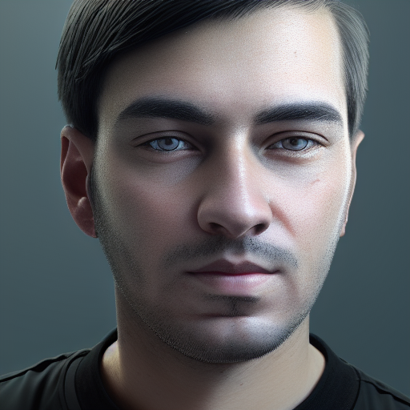 | ||||||
Sohail Ahmed KhanPhD Candidate MediaFutures, Department of Information Science and Media Studies, University of Bergen, Norway Email: sohailahmedkhan173@gmail.com Resume • Google Scholar • Github • Linkedin | ||||||
I am a PhD candidate at the Department of Information Science and Media Studies, University of Bergen, Norway. My research interests lie in the areas of Computer Vision, Deep Learning and Multimedia Forensics. I previously worked as a Research Assistant under the supervision of Dr. Hang Dai, Assistant Professor, Computer Vision department, Mohamed bin Zayed University of Artifical Intelligence, Abu Dhabi, UAE. My research was focused on Deepfake Media Detection. Prior to that, I worked as a research intern at CYENS Centre of Excellence, Nicosia, Cyprus under the supervision of Dr. Alessandro Artusi.
Education

| ||||||
| PhD in Computational Visual Content Verification
University of Bergen, Norway - | ||||||
| MSc in Cybersecurity and Artificial Intelligence
The University of Sheffield, United Kingdom Sept 2018 - Nov 2019 | ||||||
Work Experience
| Machine Learning Intern
Wolftech Broadcast Solutions AS, Bergen, Norway Sept 2023 - Oct 2023 | ||||||
| 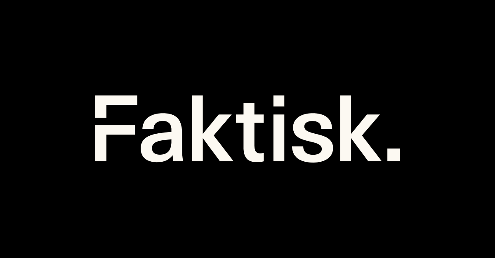 | ||||||
| Research Intern
Faktisk Verifiserbar, Oslo, Norway Oct 2022 - Dec 2022 | ||||||

| ||||||
| Computer Vision Researcher
Computer Vision Lab, MBZUAI, Abu Dhabi, UAE Dec 2020 - May 2021 [Certificate] | ||||||
| 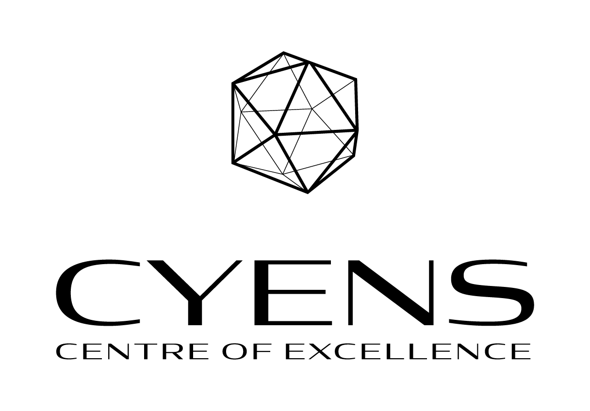 | ||||||
| Research Assistant (Remote)
DeepCamera MRG, CYENS Centre of Excellence, Nicosia, Cyprus Sept 2020 - Dec 2020 [Certificate] | ||||||
Research Papers
| 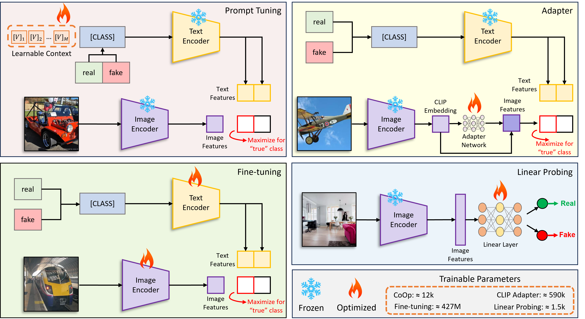 | |
| 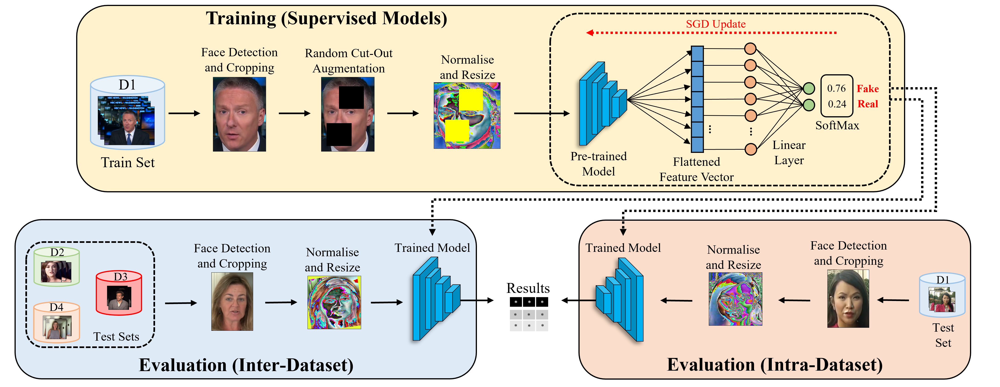 |
Deepfake Detection: Analyzing Model Generalization Across Architectures, Datasets, and Pre-Training Paradigms
|
| 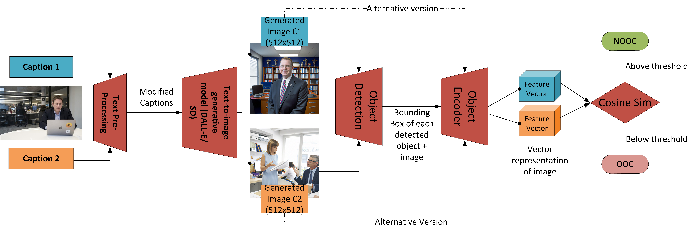 |
Detecting Out-of-Context Image-Caption Pairs in
News: A Counter-Intuitive Method
|
| 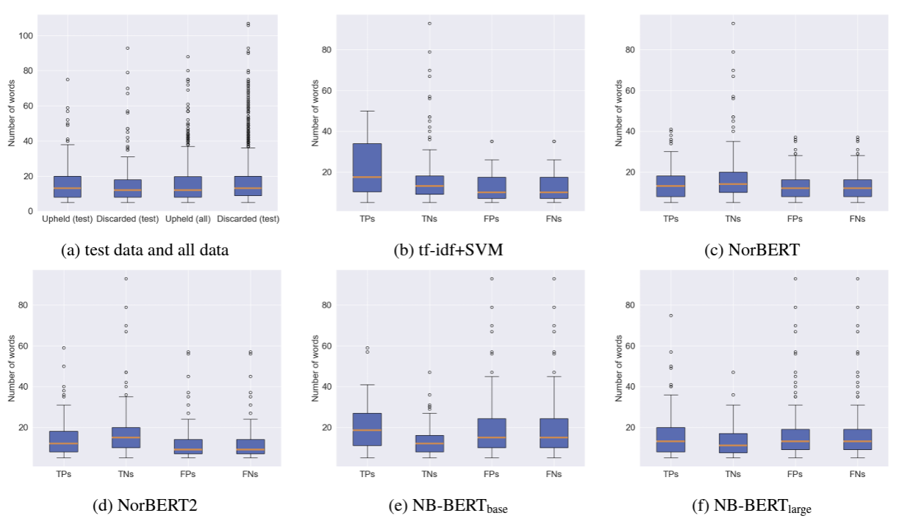 |
Automated Claim Detection for Fact-checking: A Case Study using Norwegian Pre-trained Language Models
Ghazaal Sheikhi, Samia Touileb, Sohail Ahmed Khan
|
| 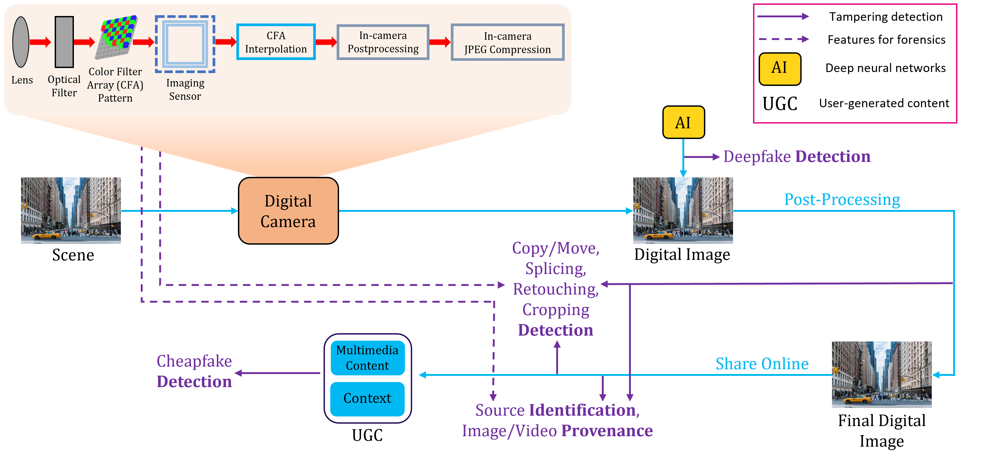 |
Visual User-Generated Content Verification in Journalism: An Overview
|
| 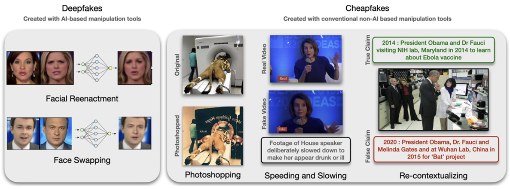 | |
| 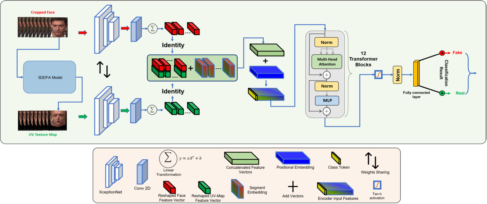 | |
| 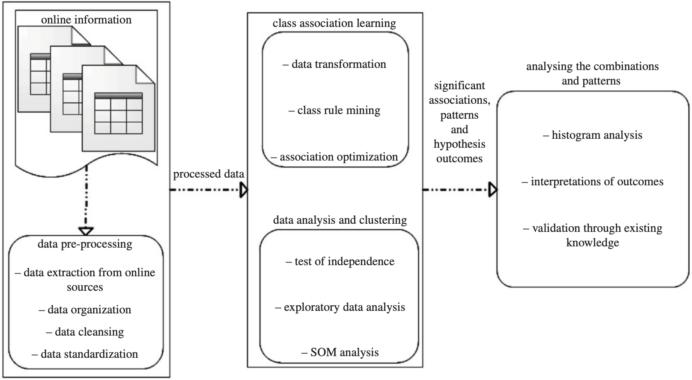 |
Analysing the Impact of Global Demographic Characteristics Over the COVID-19 Spread Using Class Rule Mining and Pattern Matching
|
| 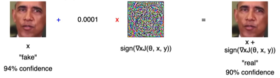 |
Adversarially Robust Deepfake Media Detection Using Fused Convolutional Neural Network Predictions
|
| 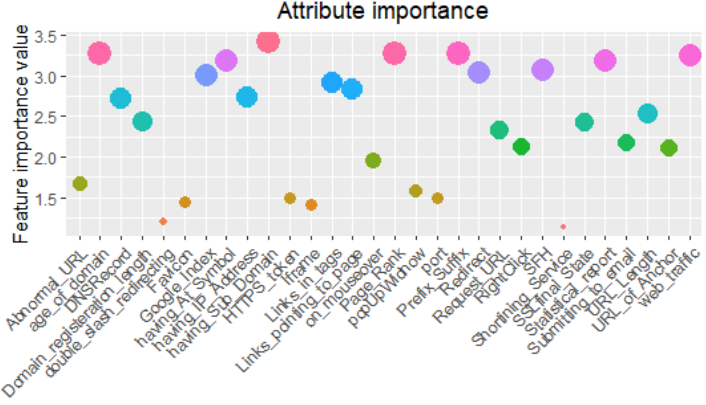 |
Phishing Attacks and Websites Classification Using Machine Learning and Multiple Datasets (A Comparative Analysis)
|